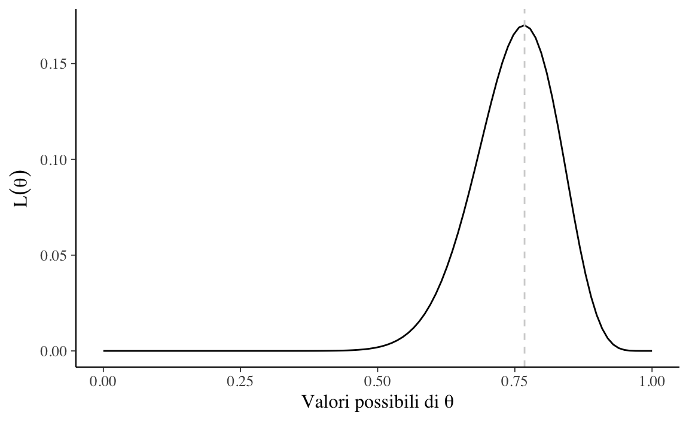
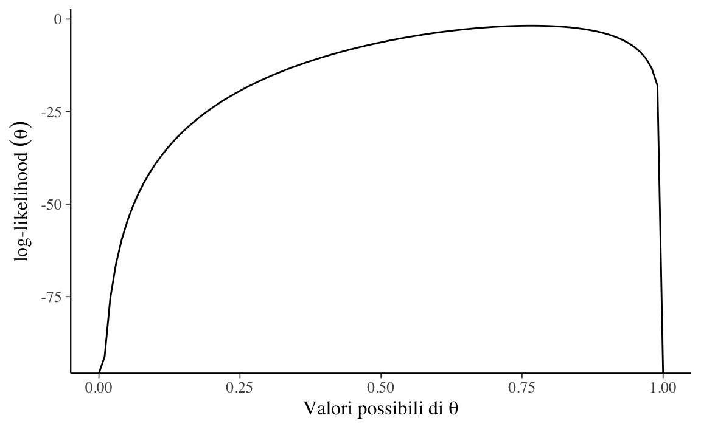
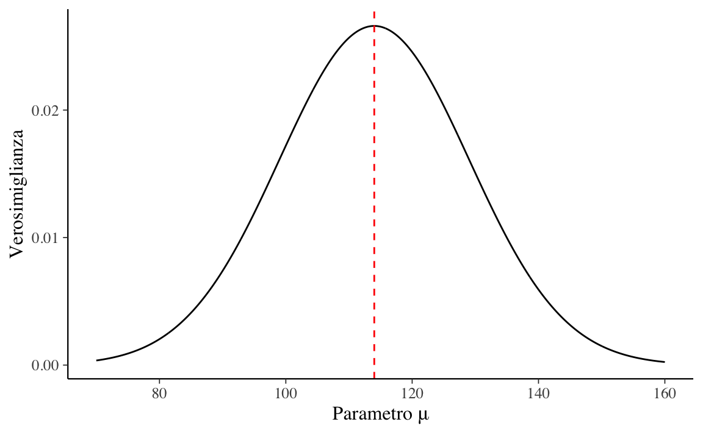
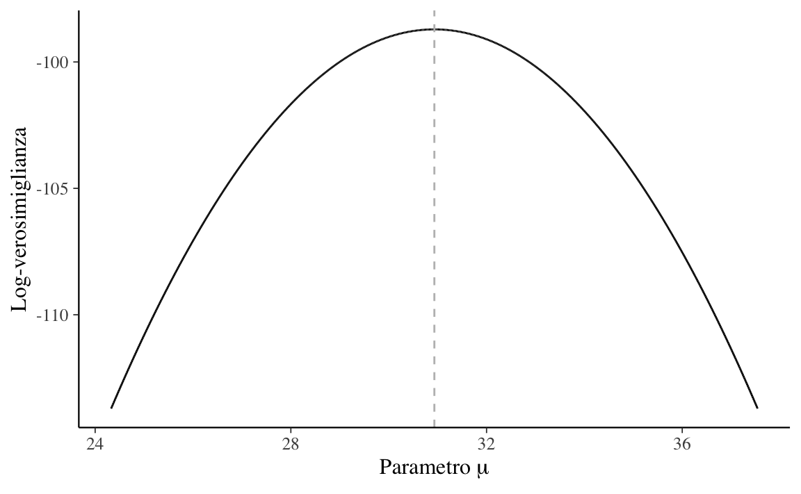

dbinom(23, 30, 0.1)
#> [1] 9.737168e-182 La funzione di verosimiglianza
La verosimiglianza viene utilizzata sia nell’inferenza bayesiana che in quella frequentista. In entrambi i paradigmi di inferenza, il suo ruolo è quantificare la forza con la quale i dati osservati supportano i possibili valori dei parametri sconosciuti di un modello statistico.
2.1 Definizione
Definizione 2.1
La funzione di verosimiglianza \(\mathcal{L}(\theta \mid y) = f(y \mid \theta), \theta \in \Theta,\) è la funzione di massa o di densità di probabilità dei dati \(y\) vista come una funzione del parametro sconosciuto (o dei parametri sconosciuti) \(\theta\).
Detto in altre parole, la funzione di verosimiglianza e la funzione di (massa o densità di) probabilità sono formalmente identiche, ma è completamente diversa la loro interpretazione:
- nel caso della funzione di massa o di densità di probabilità, la distribuzione del vettore casuale delle osservazioni campionarie \(y\) dipende dai valori assunti dal parametro (o dai parametri) \(\theta\);
- nel caso della la funzione di verosimiglianza la credibilità assegnata a ciascun possibile valore \(\theta\) viene determinata avendo acquisita l’informazione campionaria \(y\) che rappresenta l’elemento condizionante.
La funzione di verosimiglianza descrive in termini relativi il sostegno empirico che \(\theta \in \Theta\) riceve da \(y\). Infatti, la funzione di verosimiglianza assume forme diverse al variare di \(y\). Possiamo dunque pensare alla funzione di verosimiglianza come alla risposta alla seguente domanda: avendo osservato i dati \(y\), quanto risultano (relativamente) credibili i diversi valori del parametro \(\theta\)? In termini più formali possiamo dire: sulla base dei dati, \(\theta_1 \in \Theta\) risulta più credibile di \(\theta_2 \in \Theta\) quale indice del modello probabilistico generatore dei dati se \(\mathcal{L}(\theta_1) > \mathcal{L}(\theta_1)\).
Si noti un punto importante: la funzione \(\mathcal{L}(\theta \mid y)\) non è una funzione di densità. Infatti, essa non racchiude un’area unitaria.
2.2 Notazione
Seguendo una pratica comune, in questa dispensa all’interno di un framework bayesiano spesso useremo la notazione \(p(\cdot)\) per rappresentare due quantità differenti, ovvero la funzione di verosimiglianza e la distribuzione a priori. Questo piccolo abuso di notazione riflette il seguente punto di vista: anche se la verosimiglianza non è una funzione di densità di probabilità, noi non vogliamo stressare questo aspetto, ma vogliamo piuttosto pensare alla verosimiglianza e alla distribuzione a priori come a due elementi che sono egualmente necessari per calcolare la distribuzione a posteriori. In altri termini, per così dire, questa notazione assegna lo stesso status epistemico alle due diverse quantità che si trovano al numeratore della regola di Bayes.
2.3 Caso binomiale
Iniziamo a discutere la funzione di verosimiglianza considerando il caso più semplice, ovvero quello Binomiale.
2.3.1 Funzione di verosimiglianza
Per \(n\) prove Bernoulliane indipendenti, le quali producono \(y\) successi e (\(n-y\)) insuccessi, la funzione nucleo di verosimiglianza (ovvero, la funzione di verosimiglianza da cui sono state escluse tutte le costanti moltiplicative che non hanno alcun effetto su \(\hat{\theta}\)) è
\[ \mathcal{L}(p \mid y) = \theta^y (1-\theta)^{n - y}.\notag \tag{2.1}\]
Per fare un esempio pratico, consideriamo la ricerca di Zetsche et al. (2019). Questi ricercatori hanno trovato che, su 30 pazienti clinicamente depressi, 23 manifestavano delle aspettative relative al loro umore futuro distorsione negativamente. Se i dati di Zetsche et al. (2019) vengono riassunti da una proporzione (ovvero, 23/30), allora è sensato adottare un modello probabilistico binomiale quale meccanismo generatore dei dati:
\[ y \sim \mbox{Bin}(n, \theta), \tag{2.2}\]
laddove \(\theta\) è la probabiltà che una prova Bernoulliana assuma il valore 1 e \(n\) corrisponde al numero di prove Bernoulliane. Questo modello assume che le prove Bernoulliane \(y_i\) che costituiscono il campione \(y\) siano tra loro indipendenti e che ciascuna abbia la stessa probabilità \(\theta \in [0, 1]\) di essere un “successo” (valore 1). In altre parole, il modello generatore dei dati avrà una funzione di massa di probabilità
\[ p(y \mid \theta) \ = \ \mbox{Bin}(y \mid n, \theta). \]
Nei capitoli precedenti è stato mostrato come, sulla base del modello binomiale, sia possibile assegnare una probabilità a ciascun possibile valore \(y \in \{0, 1, \dots, n\}\) assumendo noto il valore del parametro \(\theta\). Ma ora abbiamo il problema inverso, ovvero quello di fare inferenza su \(\theta\) alla luce dei dati campionari \(y\). In altre parole, riteniamo di conoscere il modello probabilistico che ha generato i dati, ma di tale modello non conosciamo i parametri: vogliamo dunque ottenere informazioni su \(\theta\) avendo osservato i dati \(y\). Per fare questo, in un ottica bayesiana, è innanzitutto necessario definire la funzione di verosimiglianza.
Per i dati di Zetsche et al. (2019) la funzione di verosimiglianza corrisponde alla funzione binomiale di parametro \(\theta \in [0, 1]\) sconosciuto. Abbiamo osservato un “successo” 23 volte in 30 “prove”, \(y = 23\) e \(n = 30\). La funzione di verosimiglianza dunque diventa
\[ \mathcal{L}(\theta \mid y) = \frac{(23 + 7)!}{23!7!} \theta^{23} + (1-\theta)^7. \]
Per costruire la funzione di verosimiglianza dobbiamo applicare l’?eq-likebino23 tante volte, cambiando ogni volta il valore \(\theta\) ma tenendo sempre costante il valore dei dati. Per esempio, se poniamo \(\theta = 0.1\)
\[ \mathcal{L}(\theta \mid y) = \frac{(23 + 7)!}{23!7!} 0.1^{23} + (1-0.1)^7 \]
otteniamo
Se poniamo \(\theta = 0.2\)
\[ \mathcal{L}(\theta \mid y) = \frac{(23 + 7)!}{23!7!} 0.2^{23} + (1-0.2)^7 \]
otteniamo
dbinom(23, 30, 0.2)
#> [1] 3.581417e-11e così via. La Figura 2.1 – costruita utilizzando 100 valori equispaziati \(\theta \in [0, 1]\) – fornisce una rappresentazione grafica della funzione di verosimiglianza.
n <- 30
y <- 23
theta <- seq(0, 1, length.out = 100)
like <- choose(n, y) * theta^y * (1 - theta)^(n - y)
tibble(theta, like) %>%
ggplot(aes(x = theta, y = like)) +
geom_line() +
labs(
y = expression(L(theta)),
x = expression("Valori possibili di" ~ theta)
)
Come possiamo interpretare la curva che abbiamo ottenuto? Per alcuni valori \(\theta\) la funzione di verosimiglianza assume valori piccoli; per altri valori \(\theta\) la funzione di verosimiglianza assume valori più grandi. Questi ultimi sono i valori di \(\theta\) più credibili e il valore 23/30 = 0.767 (la moda della funzione di verosimiglianza) è il valore più credibile di tutti.
d <- tibble(theta, like)
d[which.max(like), ]$theta
#> [1] 0.76767682.3.2 La log-verosimiglianza
Dal punto di vista pratico risulta più conveniente utilizzare, al posto della funzione di verosimiglianza, il suo logaritmo naturale, ovvero la funzione di log-verosimiglianza:
\[ \ell(\theta) = \log \mathcal{L}(\theta). \tag{2.3}\]
Poiché il logaritmo è una funzione strettamente crescente (usualmente si considera il logaritmo naturale), allora \(\mathcal{L}(\theta)\) e \(\ell(\theta)\) assumono il massimo (o i punti di massimo) in corrispondenza degli stessi valori di \(\theta\):
\[ \hat{\theta} = \mbox{argmax}_{\theta \in \Theta} \ell(\theta) = \mbox{argmax}_{\theta \in \Theta} \mathcal{L}(\theta). \]
Per le proprietà del logaritmo, la funzione nucleo di log-verosimiglianza è
\[ \begin{aligned} \ell(\theta \mid y) &= \log \mathcal{L}(\theta \mid y) \notag\\ &= \log \left(\theta^y (1-\theta)^{n - y} \right) \notag\\ &= \log \theta^y + \log \left( (1-\theta)^{n - y} \right) \notag\\ &= y \log \theta + (n - y) \log (1-\theta).\notag \end{aligned} \]
Si noti che non è necessario lavorare con i logaritmi, ma è fortemente consigliato. Il motivo è che i valori della verosimiglianza, in cui si moltiplicano valori di probabilità molto piccoli, possono diventare estremamente piccoli – qualcosa come \(10^{-34}\). In tali circostanze, non è sorprendente che i programmi dei computer mostrino problemi di arrotondamento numerico. Le trasformazioni logaritmiche risolvono questo problema.
2.3.2.1 Un’applicazione empirica
Svolgiamo nuovamente il problema precedente usando la log-verosimiglianza per trovare la stima di massima verosimiglianza. Si noti che abbiamo utilizzato l’argomento log = TRUE nella funzione dbinom().
n <- 30
y <- 23
theta <- seq(0, 1, length.out = 100)
ll <- dbinom(y, n, theta, log = TRUE)
tibble(theta, ll) %>%
ggplot(aes(x = theta, y = ll)) +
geom_line() +
labs(
y = expression("log-likelihood" ~ (theta)),
x = expression("Valori possibili di" ~ theta)
)
d <- tibble(theta, ll)
d[which.max(ll), ]$theta
#> [1] 0.76767682.4 Funzione di verosimiglianza Gaussiana
Ora che abbiamo capito come costruire la funzione verosimiglianza di una binomiale è relativamente semplice fare un passo ulteriore e considerare la verosimiglianza del caso di una funzione di densità, ovvero nel caso di una variabile casuale continua. Consideriamo qui il caso della Normale. La densità di una distribuzione Normale di parametri \(\mu\) e \(\sigma\) è
\[ f(x \mid \mu, \sigma) = \frac{1}{\sigma \sqrt{2\pi}} \exp\left\{-\frac{1}{2\sigma^2}(x-\mu)^2\right\}. \]
Ora ci poniamo il problema di costruire la funzione di verosimiglianza per questa funzione di densità di probabilità.
2.4.1 Una singola osservazione
Consideriamo prima il caso in cui i dati corrispondono ad una singola osservazione \(x\). La formula precedente dipende dai parametri \(\mu\) e \(\sigma\) e dai dati \(x\). Per costruire la funzione di verosimiglianza, dobbiamo dunque inserire nella formula precedente un singolo valore \(x\). In output abbiamo il risultato che si ottiene variando, nella funzione, i valori di due parametri: \(\mu\) e \(\sigma\).
Per semplicità, consideriamo il caso in cui si ipotizza \(\sigma\) noto e uguale a 15. Poniamo \(x = 114\).
x <- 114Esaminiamo l’andamento della funzione nell’intervallo di valori \(\mu\) compreso tra 70 e 160:
mu <- seq(70, 160, length.out = 1e3)La formula della distribuzione Gaussiana è implementata in \(\mathsf{R}\) nella funzione dnorm(). La funzione dnorm() ha tre argomenti:
- il valore \(x\) (o il vettore \(x\)),
- la media, ovvero il parametro \(\mu\),
- la deviazione standard, ovvero il parametro \(\sigma\).
Come nel caso della Binomiale, anche ora, per calcolare la funzione di verosimiglianza, teniamo costante i dati – nel caso presente, il singolo valore \(x = 114\), e facciamo variare il valore dei parametri – qui, solo \(\mu\), dato che il parametro \(\sigma\) è assunto noto, \(\sigma = 15\).
Nella presente simulazione consideriamo 1000 possibile valori del parametro \(\mu \in [70, 160]\). Applichiamo dunque 1000 volte la formula della densità Gaussiana, una volta per ciascuno dei 1000 possibili valori \(\mu\), tenendo costanti gli altri valori nella formula, ovvero \(x = 114\) e \(\sigma = 15\). Otteniamo così 1000 punti – ovvero, 1000 coppie di valori \(\mu\) e \(f(\mu)\). La curva che interpola tali punti è la funzione di verosimiglianza.
f_mu <- dnorm(x, mean = mu, sd = 15)Si noti che la funzione di verosimiglianza ha la forma della distribuzione Gaussiana. Nel caso di una singola osservazione (ma solo in questo caso), ha anche un’area unitaria:
La moda di tale funzione è 114:
tibble(mu, f_mu) %>%
ggplot(
aes(x = mu, y = f_mu)
) +
geom_line() +
vline_at(114, color = "red", linetype="dashed") +
labs(
y = "Verosimiglianza",
x = c("Parametro \u03BC")
) 
2.4.2 Un campione di osservazioni
Possiamo immaginare un campione casuale \(y_1, y_2, \dots, y_n\) estratto da una popolazione \(\mathcal{N}(\mu, \sigma)\) come una sequenza di realizzazioni indipendenti ed identicamente distribuite (di seguito, i.i.d.) della medesima variabile casuale \(Y \sim \mathcal{N}(\mu, \sigma)\). I parametri sconosciuti sono \(\theta = \{\mu, \sigma\}\).
Se le variabili casuali \(y_1, y_2, \dots, y_n\) sono i.i.d., la loro densità congiunta è data da: \[\begin{align} f(y \mid \theta) &= f(y_1 \mid \theta) \cdot f(y_2 \mid \theta) \cdot \; \dots \; \cdot f(y_n \mid \theta)\notag\\ &= \prod_{i=1}^n f(y_i \mid \theta), \end{align}\]
laddove \(f(\cdot)\) è la densità Gaussiana di parametri \(\mu, \sigma\). Tenendo costanti i dati \(y\), la funzione di verosimiglianza diventa:
\[\begin{equation} \mathcal{L}(\theta \mid y) = \prod_{i=1}^n f(y_i \mid \theta). \end{equation}\]Per chiarire la formula precedente, consideriamo un esempio che utilizza i dati che corrispondono ai valori BDI-II dei trenta soggetti del campione clinico di Zetsche et al. (2020).
d <- tibble(
y = c(
26, 35, 30, 25, 44, 30, 33, 43, 22, 43, 24, 19, 39, 31, 25, 28, 35, 30, 26,
31, 41, 36, 26, 35, 33, 28, 27, 34, 27, 22
)
)Ci poniamo l’obiettivo di creare la funzione di verosimiglianza per questi dati, supponendo di sapere (in base ai risultati di ricerche precedenti) che i punteggi BDI-II si distribuiscono secondo la legge Normale e supponendo \(\sigma\) noto e uguale alla deviazione standard del campione:
true_sigma <- sd(d$y)
true_sigma
#> [1] 6.606858Abbiamo visto in precedenza che, per una singola osservazione, la funzione di verosimiglianza è la densità Gaussiana espressa in funzione dei parametri. Per un campione di osservazioni i.i.d., ovvero \(y = (y_1, y_2, \dots, y_n)\), la verosimiglianza è la funzione di densità congiunta \(f(y \mid \mu, \sigma)\) espressa in funzione dei parametri. Dato che le osservazioni sono i.i.d., la densità congiunta è data dal prodotto delle densità delle singole osservazioni.
Per l’osservazione \(y_i\) abbiamo
\[ f(y_i \mid \mu, \sigma) = \frac{1}{{6.61 \sqrt {2\pi}}}\exp\left\{{-\frac{(y_i - \mu)^2}{2\cdot 6.61^2}}\right\}.\notag \]
La densità congiunta è dunque
\[ f(y \mid \mu, \sigma) = \, \prod_{i=1}^n f(y_i \mid \mu, \sigma)\notag \]
e, alla luce dei dati osservati, la verosimiglianza diventa
\[\begin{aligned} \mathcal{L}(\mu, \sigma \mid y) =& \, \prod_{i=1}^n f(y_i \mid \mu, \sigma) = \notag\\ & \frac{1}{{6.61 \sqrt {2\pi}}}\exp\left\{{-\frac{(26 - \mu)^2}{2\cdot 6.61^2}}\right\} \times \notag\\ & \frac{1}{{6.61 \sqrt {2\pi}}}\exp\left\{{-\frac{(35 - \mu)^2}{2\cdot 6.61^2}}\right\} \times \notag\\ & \vdots \notag\\ & \frac{1}{{6.61 \sqrt {2\pi}}}\exp\left\{{-\frac{(22 - \mu)^2}{2\cdot 6.61^2}}\right\}. \end{aligned}\]Avendo un solo parametro sconosciuto, possiamo rappresentare la verosimiglianza con una curva. In \(\textsf{R}\), definiamo la funzione di log-verosimiglianza nel modo seguente:
Nella funzione log_likelihood(), y è un vettore che, nel caso presente contiene \(n = 30\) valori. Per ciascuno di questi valori, la funzione dnorm() trova la densità Normale utilizzando il valore \(\mu\) che passato a log_likelihood() e il valore \(\sigma\) uguale a 6.61 — nell’esempio, questo parametro viene assunto come noto. L’argomento log = TRUE specifica che deve essere preso il logaritmo. La funzione dnorm() è un argomento della funzione sum(). Ciò significa che i 30 valori così trovati, espressi su scala logaritmica, verranno sommati — sommare logaritmi è equivalente a fare il prodotto dei valori sulla scala originaria.
Se applichiamo questa funzione ad un solo valore \(\mu\) otteniamo l’ordinata della funzione di log-verosimiglianza in corrispondenza del valore \(\mu\) (si veda la figura @ref(eq:lldepression)). Si noti che, per trovare un tale valore, abbiamo utilizzato le seguenti informazioni:
- i 30 dati del campione,
- il valore \(\sigma = s\) fissato a 6.61,
- il singolo valore \(\mu\) passato alla funzione
log_likelihood().
Avendo trovato un singolo punto della funzione di log-verosimiglianza, dobbiamo ripetere i calcoli precedenti per tutti i possibili valori che \(\mu\) può assumere. Nel seguente ciclo for() viene calcolata la log-verosimiglianza di 100,000 valori possibili del parametro \(\mu\):
Il vettore mu contiene 100,000 possibili valori del parametro \(\mu\); tali valori sono stati scelti nell’intervallo \(\bar{y} \pm s\). Per ciascuno di questi valori la funzione log_likelihood() calcola il valore di log-verosimiglianza. I 100,000 risultati vengono salvati nel vettore ll.
I vettori mu e ll possono dunque essere usati per disegnare il grafico della funzione di log-verosimiglianza per il parametro \(\mu\):
tibble(mu, ll) %>%
ggplot(aes(x = mu, y = ll)) +
geom_line() +
vline_at(mean(d$y), color = "gray", linetype = "dashed") +
labs(
y = "Log-verosimiglianza",
x = expression("Parametro"~mu)
) 
La funzione di log-verosimiglianza descrive la verosimiglianza relativa dei valori del parametro \(\mu\) alla luce dei dati osservati.
2.4.3 Massima verosimiglianza
Il valore \(\mu\) più verosimile è quello che corrisponde al massimo della funzione di log-verosimiglinza – e viene detto stima di massima verosimiglianza.
Il massimo della funzione di log-verosimiglianza, ovvero 30.93, è identico alla media dei dati campionari. Tale risultato, ottenuto per via numerica, può essere dimostrato formalmente nel modo seguente.
Usando la notazione matematica possiamo dire che cerchiamo l’argmax dell’equazione precedente rispetto a \(\theta\), ovvero
\[ \hat{\theta} = \text{argmax}_{\theta} \prod_{i=1}^n f(y_i \mid \theta). \]
Questo problema si risolve calcolando le derivate della funzione rispetto a \(\theta\), ponendo le derivate uguali a zero e risolvendo. Saltando tutti i passaggi algebrici di questo procedimento, per \(\mu\) troviamo
\[\begin{equation} \hat{\mu} = \frac{1}{n} \sum_{i=1}^n y_i \end{equation}\]e per \(\sigma\) abbiamo
\[\begin{equation} \hat{\sigma} = \sqrt{\sum_{i=1}^n\frac{1}{n}(y_i- \mu)^2}. \end{equation}\]In altri termini, la s.m.v. del parametro \(\mu\) è la media del campione e la s.m.v. del parametro \(\sigma\) è la deviazione standard del campione.
2.5 Considerazioni conclusive
La verosimiglianza viene utilizzata sia nell’inferenza bayesiana che in quella frequentista. In entrambi i paradigmi di inferenza, il suo ruolo è quantificare la forza con la quale i dati osservati supportano i possibili valori dei parametri sconosciuti.
Nella funzione di verosimiglianza i dati (osservati) vengono trattati come fissi, mentre i valori del parametro (o dei parametri) \(\theta\) vengono variati: la verosimiglianza è una funzione di \(\theta\) per il dato fisso \(y\). Pertanto, la funzione di verosimiglianza riassume i seguenti elementi: un modello statistico che genera stocasticamente i dati (in questo capitolo abbiamo esaminato due modelli statistici: quello binomiale e quello Normale), un intervallo di valori possibili per \(\theta\) e i dati osservati \(y\).
Nella statistica frequentista l’inferenza si basa solo sui dati a disposizione e qualunque informazione fornita dalle conoscenze precedenti non viene presa in considerazione. Nello specifico, nella statistica frequentista l’inferenza viene condotta massimizzando la funzione di (log) verosimiglianza, condizionatamente ai valori assunti dalle variabili casuali campionarie. Le basi dell’inferenza frequentista, dunque, sono state riassunte in questo Capitolo. Nella statistica bayesiana, invece, l’inferenza statistica viene condotta combinando la funzione di verosimiglianza con le distribuzioni a priori dei parametri incogniti \(\theta\). Ciò verrà discusso nei Capitoli successivi.
La differenza fondamentale tra inferenza bayesiana e frequentista è dunque che i frequentisti non ritengono utile descrivere i parametri in termini probabilistici: i parametri dei modelli statistici vengono concepiti come fissi ma sconosciuti. Nell’inferenza bayesiana, invece, i parametri sconosciuti sono intesi come delle variabili casuali e ciò consente di quantificare in termini probabilistici il nostro grado di intertezza relativamente al loro valore.
2.6 La verosimiglianza del modello Normale
Ora che abbiamo capito come costruire la funzione verosimiglianza di una binomiale è relativamente semplice fare un passo ulteriore e considerare la verosimiglianza del caso di una funzione di densità, ovvero nel caso di una variabile casuale continua. Consideriamo qui il caso della Normale.
La densità di una distribuzione Normale di parametri \(\mu\) e \(\sigma\) è
\[ f(y \mid \mu, \sigma) = \frac{1}{\sigma \sqrt{2\pi}} \exp\left\{-\frac{1}{2\sigma^2}(y-\mu)^2\right\}. \]
Poniamoci il problema di trovare la s.m.v. dei parametri sconosciuti \(\mu\) e \(\sigma\) nel caso in cui le \(n\) osservazioni \(y = (y_1, \dots, y_n)\) sono realizzazioni indipendenti ed identicamente distribuite (di seguito, i.i.d.) della medesima variabile casuale \(Y \sim \mathcal{N}(\mu, \sigma)\). Per semplicità, scriveremo \(\theta = \{\mu, \sigma\}.\)
Il campione osservato è un insieme di eventi, ciascuno dei quali corrisponde alla realizzazione di una variabile casuale — possiamo pensare ad uno di tali eventi come all’estrazione casuale di un valore dalla “popolazione” \(\mathcal{N}(\mu, \sigma)\). Se le variabili casuali sono i.i.d., la loro densità congiunta è data da:
\[\begin{align} f(y \mid \theta) &= f(y_1 \mid \theta) \cdot f(y_2 \mid \theta) \cdot \; \dots \; \cdot f(y_n \mid \theta)\notag\\ &= \prod_{i=1}^n f(y_i \mid \theta), \end{align}\]Tenendo costanti i dati \(y\), la funzione di verosimiglianza è:
\[\begin{equation} \mathcal{L}(\theta \mid y) = \prod_{i=1}^n f(y_i \mid \theta). \end{equation}\]L’obiettivo è quello di massimizzare la funzione di verosimiglianza per trovare i valori \(\theta\) ottimali. Usando la notazione matematica questo si esprime dicendo che cerchiamo l’argmax dell’equazione precedente rispetto a \(\theta\), ovvero
\[ \hat{\theta} = \text{argmax}_{\theta} \prod_{i=1}^n f(y_i \mid \theta). \]
Questo problema si risolve calcolando le derivate della funzione rispetto a \(\theta\), ponendo le derivate uguali a zero e risolvendo. Saltando tutti i passaggi algebrici di questo procedimento, per \(\mu\) troviamo
\[\begin{equation} \hat{\mu} = \frac{1}{n} \sum_{i=1}^n y_i \end{equation}\]e per \(\sigma\) abbiamo
\[\begin{equation} \hat{\sigma} = \sqrt{\sum_{i=1}^n\frac{1}{n}(y_i- \mu)^2}. \end{equation}\]In altri termini, la s.m.v. del parametro \(\mu\) è la media del campione e la s.m.v. del parametro \(\sigma\) è la deviazione standard del campione.
Calcolo numerico
Consideriamo ora un esempio che utilizza dei dati reali. I dati corrispondono ai valori BDI-II dei trenta soggetti del campione clinico di Zetsche et al. (2020).
d <- tibble(
y = c(
26, 35, 30, 25, 44, 30, 33, 43, 22, 43, 24, 19, 39, 31, 25, 28, 35, 30, 26, 31, 41, 36, 26, 35,
33, 28, 27, 34, 27, 22
)
)Ci poniamo l’obiettivo di creare la funzione di verosimiglianza per questi dati, supponendo, in base ai risultati di ricerche precedenti, di sapere che i punteggi BDI-II si distribuiscono secondo una legge Normale.
Per semplificare il problema, assumeremo di conoscere \(\sigma\) (lo porremo uguale alla deviazione standard del campione) in modo da avere un solo parametro sconosciuto, cioè \(\mu\). Il problema è dunque quello di trovare la funzione di verosimiglianza per il parametro \(\mu\), date le 30 osservazioni del campione e dato \(\sigma = s = 6.61\).
Per una singola osservazione, la funzione di verosimiglianza è la densità Normale espressa in funzione dei parametri. Per un campione di osservazioni i.i.d., ovvero \(y = (y_1, y_2, \dots, y_n)\), la verosimiglianza è la funzione di densità congiunta \(f(y \mid \mu, \sigma)\) espressa in funzione dei parametri, ovvero \(\mathcal{L}(\mu, \sigma \mid y)\). Dato che le osservazioni sono i.i.d., la densità congiunta è data dal prodotto delle densità delle singole osservazioni. Per semplicità, assumiamo \(\sigma\) noto e uguale alla deviazione standard del campione:
true_sigma <- sd(d$y)
true_sigma
#> [1] 6.606858Avendo posto \(\sigma = 6.61\), per una singola osservazione \(y_i\) abbiamo
\[ f(y_i \mid \mu, \sigma) = \frac{1}{{6.61 \sqrt {2\pi}}}\exp\left\{{-\frac{(y_i - \mu)^2}{2\cdot 6.61^2}}\right\},\notag \]
dove il pedice \(i\) specifica l’osservazione \(y_i\) tra le molteplici osservazioni \(y\), e \(\mu\) è il parametro sconosciuto che deve essere determinato (nell’esempio, \(\sigma = s\)). La densità congiunta è dunque
\[ f(y \mid \mu, \sigma) = \, \prod_{i=1}^n f(y_i \mid \mu, \sigma)\notag \]
e, alla luce dei dati osservati, la verosimiglianza diventa
\[\begin{aligned} \mathcal{L}(\mu, \sigma \mid y) =& \, \prod_{i=1}^n f(y_i \mid \mu, \sigma) = \notag\\ & \frac{1}{{6.61 \sqrt {2\pi}}}\exp\left\{{-\frac{(26 - \mu)^2}{2\cdot 6.61^2}}\right\} \times \notag\\ & \frac{1}{{6.61 \sqrt {2\pi}}}\exp\left\{{-\frac{(35 - \mu)^2}{2\cdot 6.61^2}}\right\} \times \notag\\ & \vdots \notag\\ & \frac{1}{{6.61 \sqrt {2\pi}}}\exp\left\{{-\frac{(22 - \mu)^2}{2\cdot 6.61^2}}\right\}. \end{aligned}\]Poniamoci ora il problema di rappresentare graficamente la funzione di verosimiglianza per il parametro \(\mu\). Avendo un solo parametro sconosciuto, possiamo rappresentare la verosimiglianza con una curva. In \(\textsf{R}\), definiamo la funzione di log-verosimiglianza nel modo seguente:
Nella funzione log_likelihood(), y è un vettore che, nel caso presente contiene \(n = 30\) valori. Per ciascuno di questi valori, la funzione dnorm() trova la densità Normale utilizzando il valore \(\mu\) che passato a log_likelihood() e il valore \(\sigma\) uguale a 6.61 — nell’esempio, questo parametro viene assunto come noto. L’argomento log = TRUE specifica che deve essere preso il logaritmo. La funzione dnorm() è un argomento della funzione sum(). Ciò significa che i 30 valori così trovati, espressi su scala logaritmica, verranno sommati — sommare logaritmi è equivalente a fare il prodotto dei valori sulla scala originaria.
Se applichiamo questa funzione ad un solo valore \(\mu\) otteniamo l’ordinata della funzione di log-verosimiglianza in corrispondenza del valore \(\mu\) (si veda la figura @ref(eq:lldepression)). Si noti che, per trovare un tale valore, abbiamo utilizzato le seguenti informazioni:
- i 30 dati del campione,
- il valore \(\sigma = s\) fissato a 6.61,
- il singolo valore \(\mu\) passato alla funzione
log_likelihood().
Avendo trovato un singolo punto della funzione di log-verosimiglianza, dobbiamo ripetere i calcoli precedenti per tutti i possibili valori che \(\mu\) può assumere. Nel seguente ciclo for() viene calcolata la log-verosimiglianza di 100,000 valori possibili del parametro \(\mu\):
Il vettore mu contiene 100,000 possibili valori del parametro \(\mu\); tali valori sono stati scelti nell’intervallo \(\bar{y} \pm s\). Per ciascuno di questi valori la funzione log_likelihood() calcola il valore di log-verosimiglianza. I 100,000 risultati vengono salvati nel vettore ll.
I vettori mu e ll possono dunque essere usati per disegnare il grafico della funzione di log-verosimiglianza per il parametro \(\mu\):
tibble(mu, ll) %>%
ggplot(aes(x = mu, y = ll)) +
geom_line() +
vline_at(mean(d$y), color = "gray", linetype = "dashed") +
labs(
y = "Log-verosimiglianza",
x = expression("Parametro"~mu)
) 
Dalla figura notiamo che, per i dati osservati, il massimo della funzione di log-verosimiglianza calcolata per via numerica, ovvero 30.93, è identico alla media dei dati campionari e corrisponde al risultato teorico atteso.
2.7 Considerazioni conclusive
Nella funzione di verosimiglianza i dati (osservati) vengono trattati come fissi, mentre i valori del parametro (o dei parametri) \(\theta\) vengono variati: la verosimiglianza è una funzione di \(\theta\) per il dato fisso \(y\). Pertanto, la funzione di verosimiglianza riassume i seguenti elementi:
- un modello statistico che genera stocasticamente i dati (in questo capitolo abbiamo esaminato due modelli statistici: quello binomiale e quello Normale),
- un intervallo di valori possibili per \(\theta\),
- i dati osservati \(y\).
Nella statistica frequentista l’inferenza si basa solo sui dati a disposizione e qualunque informazione fornita dalle conoscenze precedenti non viene presa in considerazione. Nello specifico, nella statistica frequentista l’inferenza viene condotta massimizzando la funzione di (log) verosimiglianza, condizionatamente ai valori assunti dalle variabili casuali campionarie. Nella statistica bayesiana, invece, l’inferenza statistica viene condotta combinando la funzione di verosimiglianza con le distribuzioni a priori dei parametri incogniti \(\theta\).
La differenza fondamentale tra inferenza bayesiana e frequentista è dunque che i frequentisti non ritengono utile descrivere in termini probabilistici i parametri: i parametri dei modelli statistici vengono concepiti come fissi ma sconosciuti. Nell’inferenza bayesiana, invece, i parametri sconosciuti sono intesi come delle variabili casuali e ciò consente di quantificare in termini probabilistici il nostro grado di intertezza relativamente al loro valore.